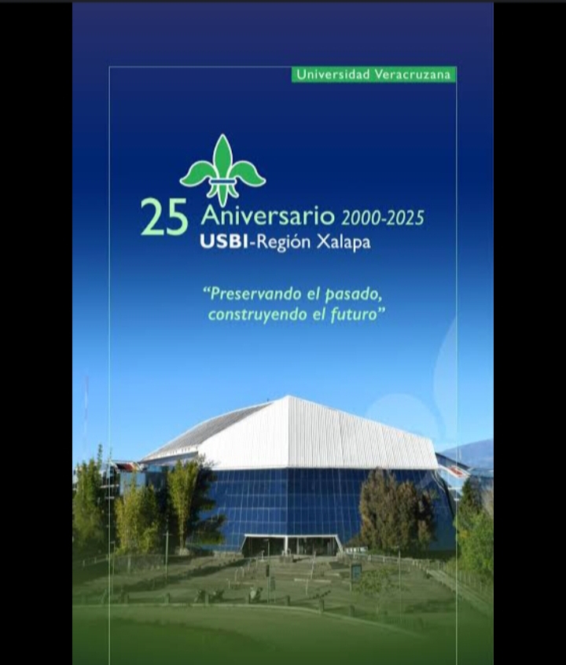
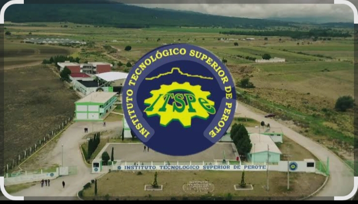
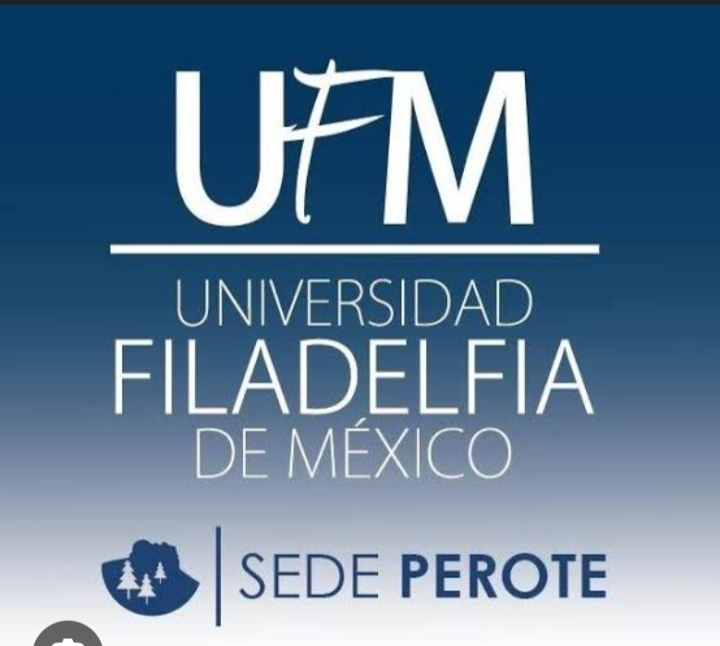
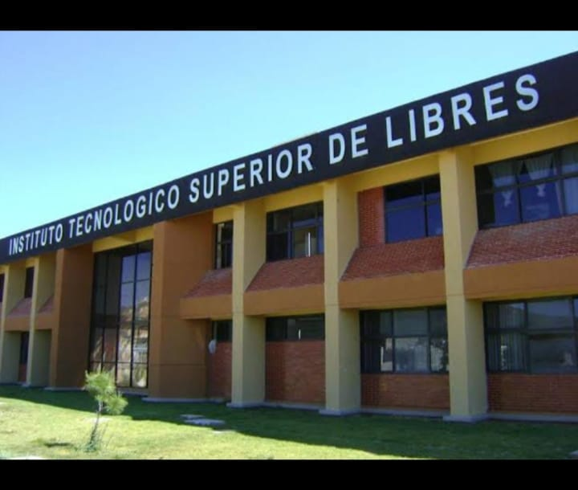
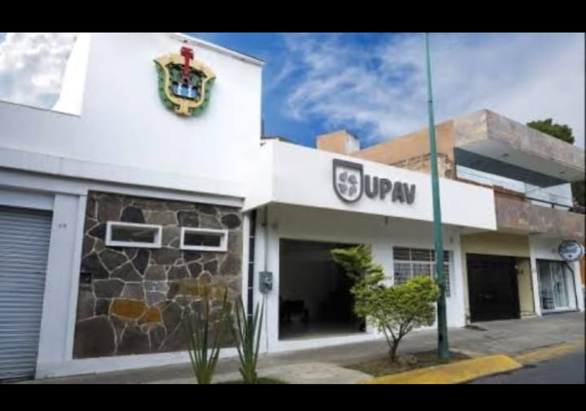
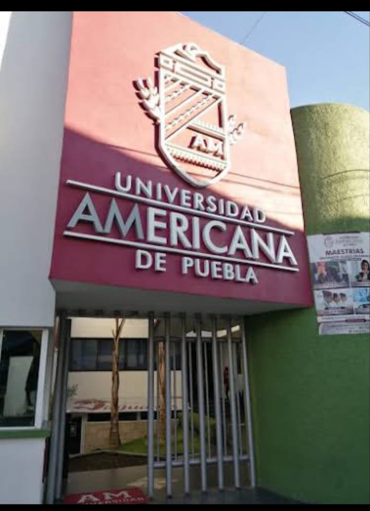
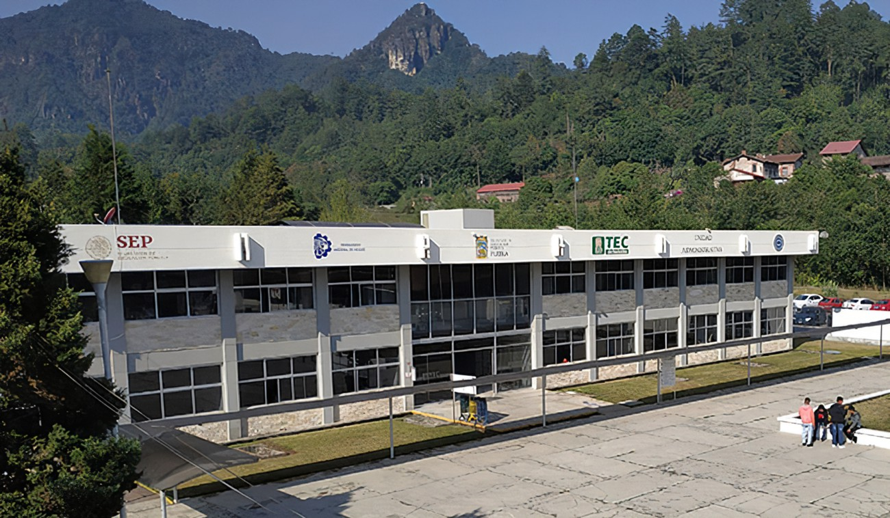
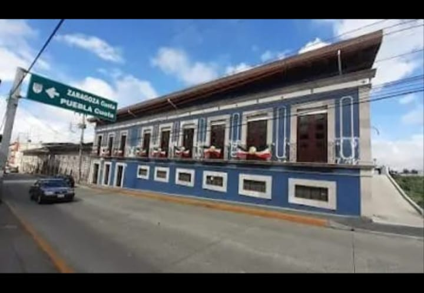

Universidad Veracruzana Xalapa
Es una institución de educación superior pública y autónoma, considerada una de las más
importantes de México.
Ofrece una amplia gama de programas de licenciatura y posgrado en modalidad presencial, abierta y en
línea.
La UV Xalapa se enfoca en la docencia, la investigación, la difusión de la cultura y la extensión de
servicios a la comunidad.

Da clic aquí para ver las carreras
Tecnologico de Perote
Es una institución de educación superior ubicada en Veracruz, México, que forma parte del Tecnológico Nacional de México (TecNM).
Su misión es formar profesionales con excelencia académica, valores y habilidades para contribuir al desarrollo regional y nacional, generando conocimientos e innovación tecnológica.

Da clic aquí para ver las carreras
Universidad Filadelfia de Perote Veracruz
Es una casa de estudios en Veracruz, México, que ofrece licenciaturas, diplomados y posgrados.
La UFM se caracteriza por su enfoque humanista y semiflexible, promoviendo la participación activa de los estudiantes.
Además, ha implementado innovaciones tecnológicas, como una plataforma virtual de educación a distancia

Da clic aquí para ver las carreras
El Instituto Tecnológico Superior de Libres (ITSLIBRES)
Es una institución de educación superior tecnológica con sede en Puebla, México.
Es un
Organismo
Público
Descentralizado del Estado de Puebla, cuyo objetivo principal es formar profesionistas competitivos,
emprendedores e innovadores, con una visión humanística.
El ITSLIBRES ofrece diversas carreras de
ingeniería, incluyendo Ingeniería Industrial, Electromecánica y Sistemas Automotrices.

Da clic aquí para ver las carreras
UPAV (Universidad Popular Autónoma de Veracruz) Teziutlán
Es un campus de la UPAV que ofrece una variedad de programas educativos, incluyendo
bachilleratos, licenciaturas
y posgrados.
Se destaca por su compromiso con la educación de calidad y la formación de profesionales con
proyección en la región.

Da clic aquí para ver las carreras
La Universidad Americana de Puebla (UAMP)
Ofrece un campus en Teziutlán, que se caracteriza por su enfoque en la formación de profesionales
con visión
global y compromiso social.
Además de la educación de alta calidad, la UAMP Teziutlán también
proporciona
oportunidades para el desarrollo personal
a través de actividades extracurriculares y servicios
estudiantiles.

Da clic aquí para ver las carreras
El Instituto Tecnológico Superior de Teziutlán (ITST)
Es una institución pública de educación superior tecnológica ubicada en Teziutlán, Puebla,
México.
Su misión
es formar profesionales que contribuyan al desarrollo de la sociedad
a través de procesos académicos de
calidad.

Da clic aquí para ver las carreras
La UPAV Coordinación Altotonga
Es una sede de la Universidad Popular Autónoma de Veracruz (UPAV) que ofrece programas de
bachillerato y
licenciaturas en Altotonga, Veracruz.
La UPAV Altotonga tiene como objetivo principal brindar educación
de
nivel medio superior
y superior a comunidades con rezago educativo.

Da clic aquí para ver las carreras